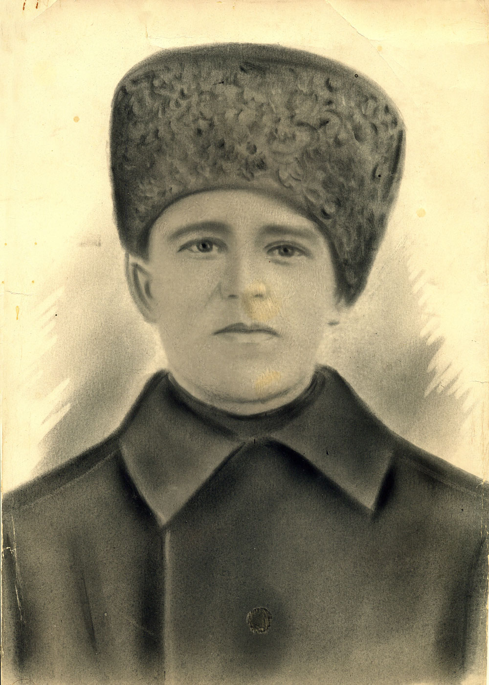
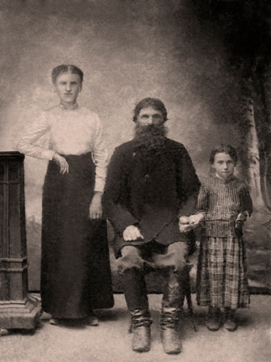
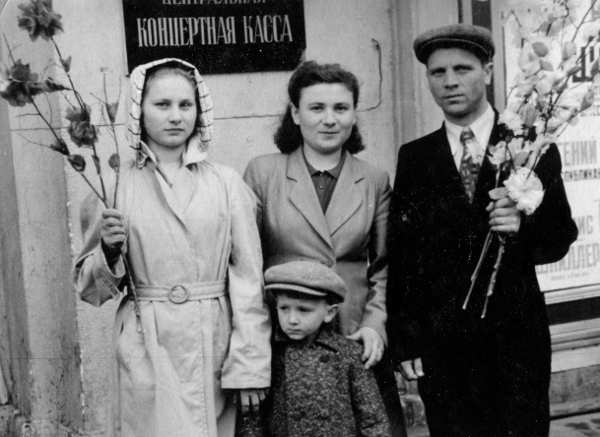
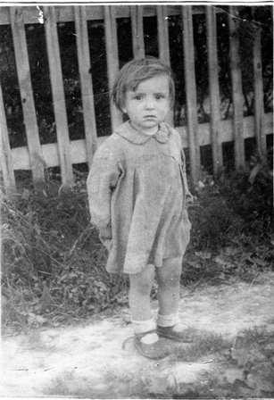

Деревня Лохино
Московская губернияЗвенигородский уездПавловская волость


{kind=link}
{kind=link}
Фамилии жителей деревни Лохино:
Макаровы
Наше повествование начинается с рождения Гавриила, отца бабушки Жени. По данным метрических книг Архангельского прихода Гавриил Иванович родился 24 марта 1895 года в деревне Лохина. Родители его Иван Петрович (1863-1934) и Феодосия Косьминишна (1862-1929), крестьяне деревни Лохино. Крестили Гавриила 26 марта в церкви Святого Михаила Архангела. Гавриил стал четвертым по счету ребенком в семье. Первым ребенком в семье был Брат Василий 1888 г.р., далее родилась Анна (1890), в 1892 Наталия, после Гавриила шел Николай (1899), а самый младший, Семён, родился в 1902 году.

На этой фотографии изображены мама Гавриила — Феодосия Косьминишна, Гавриил, младший брат Семён.

Согласно Статистической ведомости Лохинского общества от 1883 года земельный надел оформлен на Петра Макарова, отца Ивана Петровича, (№ 11 в списке). Семья состоит из 5 человек: 3 мужчин (Петр Макаров, сыновья Иван и Василий), 2 женщины (жена Петра Макарова, Наталья Григорьева и одна из 4 дочерей). Имеет 1 избу. В семье 2 грамотных мужчин. В хозяйстве одна лошадка и коровка. Остальные данные можно прочитать на отсканированном документе Статистической ведомости за 1883 год.

Гаврила Иванович сапожничал в усадьбе Архангельское. В 1916 году был призван в Императорскую армию, попал на Юго-Западный фронт в 310-й Шацкой пехотный полк 78-й дивизии, участвовавший в сражении под Ковелем. В результате тяжелого ранения ружейным выстрелом в область верхней челюсти 23.07.16 на реке Стоход потерял глаз. 9 сентября 1916 года поступил в 35-й Московский госпиталь откуда после излечения вернулся в родную деревню. Тяжелое ранение постоянно беспокоило Гавриила Ивановича, вызывая постоянные приступы головной боли.

После революции работал паромщиком на переправе через реку Москва. В 1929 году вступил в колхоз «Пламя» где стал работать в конюшне. После слияния с мамоновским колхозом в начале 50-х перешел работать на Бадаевский Пивоваренный Завод в Филях.
Семья Макаровых состояла из
главы семейства Гаврилы Ивановича
Макарова (24.III.1895-25.XII.1956),
его жены Прасковьи Ивановны (Мельниковой) (8.IX.1905-17.VII.1968),
старшего сына Виктора (1925-1935),
старшей дочки Жени (2.I.1928-21.X.2011),
средней Нади (30.IX.1929-5.I.2001) ,
младшей Вали (10.II.1937-9.VIII.2010)
и самой маленькой Раечки (1944-1948).

Гаврила Иванович Макаров (Ганя, как его называла Прасковья Ивановна) после революции вступил в колхоз, работал конюхом, мастерил обувь, растил детей. По воспоминаниям местных жителей был тщедушным и приветливым человеком, катал детей в салазках, по дороге в конюшню приветливо здоровался и никогда не отказывал в помощи. Мастерская его располагалась в доме, «кучи обрезков, производственная грязь, вокруг бегают «девки», так описывают обстановку, царившую в доме Гаврилы Ивановича. Неудивительно, что и бабушка Женя с теплотой и нежностью отзывалась о своем отце, нашем прадеде, он прожил чуть больше 60 лет, но память об этом смелом и добром человеке дошла до наших дней. Блохины, Курнаковы до сих пор с добротой вспоминают о дяде Гане, светлая память ему. Умер он 25 декабря 1956. Похоронен на Баковском кладбище. Труды его не прошли даром, сегодня мы живем в доме, который построил наш прадед. Жизнь его была непроста, но несмотря на все испытания, семья его смогла пережить войну, разрастись и дать свои корни. В знак уважения и памяти, мы надеемся установить новые подробности жизни Гаврилы Ивановича, а также пополнить информацию о родной деревне.
Прасковья Ивановна Мельникова (девочка справа)

Прасковья Ивановна Макарова (Мельникова) (Проша, как её называл Гаврила Иванович) родилась в деревне Думаново Марьинской волости Новоторжокского уезда Тверской Губернии, 8 сентября 1905 года в семье Ивана и Акулины Мельниковых. В раннем детстве потеряла мать, воспитывалась старшей сестрой и отцом Иваном. Знакомство с будущим мужем произошло в Москве. 19 июня 1924 Гавриил и Прасковья заключили свой союз. По воспоминаниям бабушки, мама часто оставляла их одних. Торговала молоком в Одинцово и Кунцево. Была необщительной и строгой женщиной. После смерти мужа Прасковья Ивановна жила вместе со своей старшей дочкой Женей в Москве. Умерла 17 июля 1968 года, похоронена на Баковском кладбище.
Родился в деревне Лохино в 1925 году. Первый ребенок в семье. Мы мало, что знаем о нем, но справедливо помнить и сохранять память об этом десятилетнем грустном на всех фотографиях мальчике. По воспоминаниям бабушки, Виктор постоянно озорничал и веселил сестренок. Запомнился один случай, когда в церки он показал козу сестренкам и батюшка отвесил подзатыльник ему. Виктор заболел воспалением легких, когда его и остальных детей везли на открытых грузовых машинах в пионерский лагерь. Вскоре Виктор умер, случилось это в 1935 близ города Волоколамск. Родители ездили хоронить его, место захоронения неизвестно.

Родилась в деревне Лохино 02 января 1928 года. Стала старшей сестрой после смерти брата Виктора. Совсем еще маленькой застала перенос деревни с Лохина Острова на Можайское шоссе, близ Одинцово. По ее рассказам удалось восстановить хронологию событий и начать написание истории деревни Лохино.

Родилась в деревне Лохино 30 сентября 1929 года. Средняя сестра. Имела 4 класса образования, работала на заводе «Знамя Труда». Муж участник ВОВ Селиванов Анатолий Иванович. Дети: Александр и Владимир. Умерла 5 января 2001 года, похоронена на Баковском кладбище.
Родилась в деревне Лохино 10 февраля 1937 года. Младшая сестра. После замужества получила фамилию Град. Дети: Андрей. Проживала на Преображенской площади. Умерла 9 августа 2010 года.

Родилась предположительно в 1944 году. Самая маленькая дочка. Умерла от менингита в 1948. Девочка не доедала и частенько забиралась к Блохиным на огород, поживиться ягодами. Бабушка Женя вспоминала, как маленькая встречала ее с работы и спрашивали не принесла ли она ей хлебушка. Девочка частенько выгонялась Прасковьей Ивановной в сени за какие-то проступки. Маленький организм не выдержал недоеданий и суровых будней послевоенного времени. Похоронена на Баковском кладбище.
Алексеевы
Согласно избирательным спискам (от 12 ноября 1917 г.) в земства жителей деревни Лохино,
в доме Ивана Егоровича Алексеева проживали следующие члены семьи:
Алексеев Иван Иванович — 26 лет
Алексеева Мария Ивановна — 25 лет
Алексеева Мария Епифановна — 54 года
Алексеев Иван Егорович — 55 лет
Блохины
Согласно спискам жителей деревни Лохино на 12 ноября 1917 года для выборов в Земства,
лица совершеннолетнего возраста в семье Блохиных были следующими:
Блохинова Варвара Ивановна 45 лет (дом Блохинов).
Ниже на фотографии Варвара Ивановна держит на коленях малыша.
По рассказам потомков, муж Варвары Ивановны, провалился зимой в прорубь, заболел и умер.
На фотографии мы видим не всех детей Варвары Ивановны.

Виляевы
Согласно спискам жителей деревни Лохино на 12 ноября 1917 года для выборов в Земства,
в деревне Лохино проживал лишь один представитель Виляевых в доме Куренковых:
Виляева Мария Ивановна — 31 год
Фамилия эта происходила из соседней деревни Захарково и по-видимому, семьи Куренковых и Виляевых
имели родственные связи.
Воробьёвы
Согласно спискам жителей деревни Лохино на 12 ноября 1917 года для выборов в Земства
в ней проживали представители рода Воробьевых, хотя фамилия не являлась лохинской.
В доме Мухиных проживал Воробьев Николай Иванович 28 лет
и его супруга Воробьева Анна Васильевна 21 года от роду.
Голышевы
Согласно спискам жителей деревни Лохино на 12 ноября 1917 года для выборов в Земства,
лица совершеннолетнего возраста в семье Голышевых были следующими:
Голышева Александра Михайловна — 22 года
Голышева Александра Яковлевна — 57 лет
Голышева Мария Степановна — 38 лет
Голышева Ольга Епифановна — 62 года
Голышев Алексей Иванович — 52 года
Голышев Иван Михайлович — 37 лет
Голышев Михаил Иванович — 58 лет
Ерёмины
Согласно спискам жителей деревни Лохино на 12 ноября 1917 года для выборов в Земства,
род Ереминых был представлены следующими его членами:
Еремина Аграфена Петровна — 35 лет (дом Прасковьи Никитичны Ереминой)
Еремина Аграфена Семеновна — 42 года (дом Дмитрия Александровича Еремина)
Еремина Анна Поликарповна — 35 лет (дом Андрея Ивановича Еремина)
Еремина Елизавета Васильевна — 20 лет (дом Дмитрия Александровича Еремина)
Еремина Прасковья Никитична — 64 года (дом Прасковьи Никитичны Ереминой)
Еремин Алексий Александрович — 35 лет (дом Прасковьи Никитичны Ереминой)
Еремин Андрей Иванович — 36 лет (дом Андрея Ивановича Еремина)
Еремин Дмитрий Александрович — 43 года (дом Дмитрия Александровича Еремина)
Зерновы
Согласно спискам жителей деревни Лохино на 12 ноября 1917 года
для выборов в Земства в доме Андрея Филипповича Зернова проживали:
Зернова Мария Егоровна — 58 лет
Зернов Андрей Филипович — 60 лет
Кирилины
Согласно спискам жителей деревни Лохино на 12 ноября 1917 года для выборов в Земства, род Кирилиных никак не отмечен, однако по имеющимся метрическим записям и другим учетным архивным документам, в деревне проживали жители с данной фамилией.
Корявовы
Согласно спискам жителей деревни Лохино на 12 ноября 1917 года для выборов в Земства,
род Корявовых был представлен следующими жителями:
Корявова Анна Васильевна — 20 лет (дом Василия Васильевича Корявова)
Корявова Елизавета Ефимовна — 50 лет (дом Алексея Васильевича Корявова)
Корявова Мария Эльдаровна — 40 лет (дом Василия Васильевича Корявова)
Корявова Прасковья Степановна — 25 лет (дом Алексея Васильевича Корявова)
Корявов Алексей Васильевич — 52 года
Корявов Василий Васильевич — 43 года
Корявов Сергей Алексеевич — 27 лет (дом Алексея Васильевича Корявова)
Куренковы
Согласно спискам жителей деревни Лохино на 12 ноября 1917 года для выборов в Земства,
в семье Куренковых проживали следующие жители:
Куренкова Анна Дмитриевна — 60 лет (дом А.Д. Куренковой)
Куренкова Александра Дмитриевна — 70 лет (дом И.В. Куренкова)
Куренкова Анна Степановна — 64 года (дом А.С. Куренковой)
Куренкова Варвара Васильевна — 29 лет (дом А.Д. Куренковой)
Куренкова Матрона Яковлевна — 56 лет (дом М.Я. Куренковой)
Куренкова Наталья Васильевна — 36 лет (дом И.В. Куренкова)
Куренкова Ольга Ивановна — 25 лет (дом И.П. Куренкова)
Куренкова Татьяна Андреевна — 50 лет (дом И.П. Куренкова)
Куренкова Татьяна Васильевна — 20 лет (дом А.Д. Куренковой)
Куренкова Устиния Ивановна — 26 лет (дом А.С. Куренковой)
Куренков Иван Васильевич — 37 лет (дом И.В. Куренкова)
Курнаковы
Согласно переписным избирательным спискам жителей деревни Лохино по состоянию на 12 ноября 1917
года
для выборов в волостные Земства, род Курнаковых был представлен следующими совершеннолетними:
Курнакова Анастасия Васильевна — 25 лет (дом А.В. Курнакова)
Курнакова Анастасия Николаевна — 22 года (дом И.П. Курнакова)
Курнаков Егор Иванович — 23 года (дом И.П. Курнакова)
Курнаков Иван Павлович — 52 года (дом И.П. Курнакова)


Левинские
Согласно спискам жителей деревни Лохино на 12 ноября 1917 года для выборов в Земства,
лица совершеннолетнего возраста в семье Левинских были следующими:
Левинская Анна Семеновна — 30 лет (дом П.Т. Еремина)
Левинский Василий Кириллович — 32 года (дом П.Т. Еремина)
Левинский Кирилл Васильевич — 70 лет (дом К.В. Левинского)
Мухины
Согласно спискам жителей деревни Лохино на 12 ноября 1917 года для выборов в Земства,
лица совершеннолетнего возраста в семье Мухиных были следующими:
Мухина Александра Ивановна — 25 лет (дом А.А. Мухина)
Мухина Анна Васильевна — 51 год (дом В.Н. Мухина)
Мухина Аксинья Алексеевна — 60 лет (дом А.А. Мухина)
Мухина Елизавета Павловна — 34 года (дом И.А. Мухина)
Мухин Алексей Алексеевич — 28 лет (дом А.А. Мухина)
Мухин Василий Никитович — 53 года (дом В.Н. Мухина)
Мухин Иван Алексеевич — 35 лет (дом И.А. Мухина)
Пакины
Согласно избирательным спискам (от 12 ноября 1917 г.) в земства жителей деревни Лохино,
семейство Пакиных составляли следующие членами:
Пакина Анна Матвеевна — 60 лет (дом Веры Ивановны Пакиной)
Пакина Вера Ивановна — 27 лет (дом Веры Ивановны Пакиной)
Пакина Марья Алексеевна — 62 года (дом Петра Павловича Пакина)
Пакина Устиния Петровна — 20 лет (дом Петра Павловича Пакина)
Пакин Петр Павлович — 59 лет (дом Петра Павловича Пакина)
Папёнышевы
Согласно спискам жителей деревни Лохино на 12 ноября 1917 года для выборов в Земства,
лица совершеннолетнего возраста в семье Папёнышевых были следующими:
Папёношева Евдокия Феоктистовна — 25 лет (дом Н.М. Папёнышева)
Папёношева Марья Федотьевна — 62 года (дом Н.М. Папёнышева)
Папёношев Алексей Никитьевич — 30 лет (дом Н.М. Папёнышева)
Папёношев Никита Михайлович — 63 года (дом Н.М. Папёнышева)
Родионовы
Согласно спискам жителей деревни Лохино на 12 ноября 1917 года для выборов в Земства,
лица совершеннолетнего возраста в семье Родионовых были следующими:
Родионова Анастасья Никифоровна — 38 лет (дом С.В. Родионова)
Родионова Ирина Ивановна — 50 лет (дом И.И. Родионова)
Родионова Ольга Михайловна — 35 лет (дом В.Н. Родионова)
Родионов Иван Никитьевич — 37 лет (дом В.Н. Родионова)
Сидорочевы
Согласно спискам жителей деревни Лохино на 12 ноября 1917 года для выборов в Земства,
лица совершеннолетнего возраста в семье Сидорочевых были следующими:
Сидорочева Александра Григорьевна — 25 лет (дом М.Сидорочева)
Сидорочева Елена Филаретовна — 37 лет (дом М.Сидорочева)
Сидорочева Мария Федоровна — 60 лет (дом М.Сидорочева)
Страшновы
Согласно спискам жителей деревни Лохино на 12 ноября 1917 года для выборов в Земства,
лица совершеннолетнего возраста в семье Страшновых были следующими:
Страшнова Александра Никитична — 56 лет (дом В.Н.Страшнова)
Страшнова Александра Федоровна — 38 лет (дом А.Н.Страшновой)
Страшнова Анна Петровна — 28 лет (дом П.Н.Страшнова)
Страшнова Евдокия Никитична — 35 лет (дом Н.В.Левинский)
Страшнова Ирина Дмитриевна — 48 лет (дом И.Страшновой)
Страшнова Любовь Васильевна — 22 года (дом В.Н.Страшнова)
Страшнова Любовь Павловна — 48 лет (дом П.Н.Страшнова)
Страшнова Пелагея Петровна — 23 года (тоже)
Страшнов Алексей Кириллович — 40 лет (дом А.К.Страшнова)
Страшнов Василий Никитович — 55 лет (дом В.Н.Страшнова)
Страшнов Николай Кириллович — 30 лет (дом К.В.Левинский)
Страшнов Петр Никитович — 47 лет (дом П.Н.Страшнова)
Филипповы
Согласно избирательным спискам (от 12 ноября 1917 г.) в земства жителей деревни Лохино,
в доме Ивана Ивановича Филиппова проживали следующие члены семьи:
Филиппова Елена Дмитриевна — 25 лет (дом И.И.Филиппова)
Филиппов Иван Иванович — 47 лет (хозяин дома)
Филиппов Николай Иванович — 25 лет (дом И.И.Филиппова)
Фроловы
Согласно избирательным спискам (от 12 ноября 1917 г.) в земства жителей деревни Лохино, представителями Фроловых был один лишь Кирилл Петрович 70 лет, который проживал в доме Еремина Андрея Ивановича.
Харламовы
Согласно избирательным спискам (от 12 ноября 1917 г.) в земства жителей деревни Лохино,
в доме Харламова Дмитрия Ивановича проживал хозяин дома и его супруга:
Харламова Анна Алексеевна — 50 лет
Харламов Дмитрий Иванович — 54 года
Хохловы
Согласно спискам жителей деревни Лохино на 12 ноября 1917 года для выборов в Земства,
в доме Алексея Егоровича Хохлова проживали следующие члены семьи:
Хохлова Наталья Васильевна — 35 лет
Хохлов Алексей Егорович — 36 лет
Хохлова Аграфена Алексеевна — 52 года
Ширкины
Согласно спискам жителей деревни Лохино на 12 ноября 1917 года для выборов в Земства,
род Ширкиных был представлен следующими его членами:
Ширкина Анна Павловна — 82 года (дом В.Н. Страшнова)
Ширкина Евдокия Никифоровна — 50 лет (тоже)
Ширкина Евдокия Николаевна — 52 года (дом И.Н. Ширкина)
Ширкина Екатерина Михайловна — 20 лет (дом И.П. Ширкина
Ширкина Мария Александровна — 24 года (дом И.Н. Ширкина)
Ширкина Мария Степановна — 44 года (дом М.П. Ширкина)
Ширкина Прасковья Михайловна — 22 года (тоже)
Ширкин Иван Иванович — 26 лет (дом И.Н. Ширкина)
Ширкин Иван Никифорович — 53 года (тоже)
Ширкин Николай Петрович — 46 лет (дом М.Н. Ширкина)